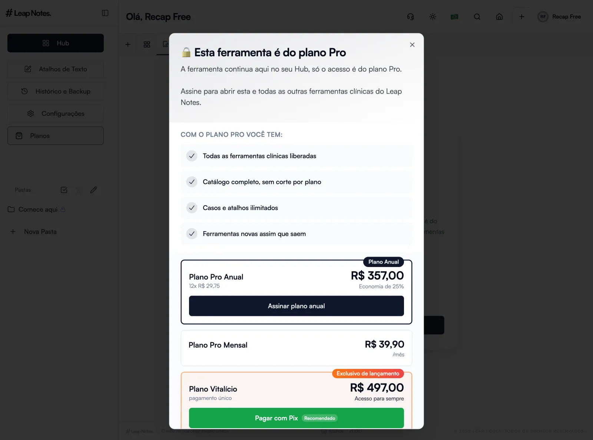
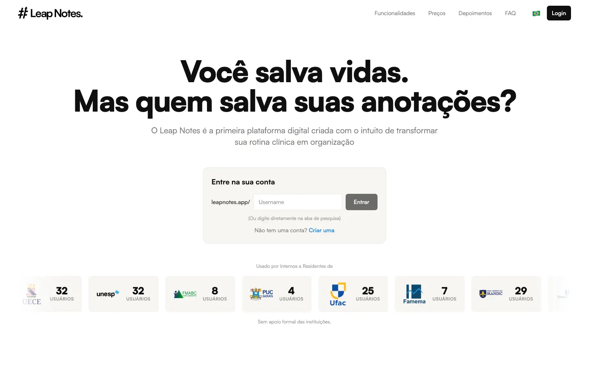

Neste artigo
A primeira versão do Leap Notes não tinha nada de medicina. Era login, cadastro e notas. Um bloco de notas com conta de usuário, basicamente. Hoje é a ferramenta de estudo e plantão de mais de 6.100 pessoas, com mais de 23 mil notas clínicas salvas, anatomia 3D, assistente de IA e checkout próprio. Ninguém sentou e desenhou esse produto inteiro no começo. Ele cresceu porque as pessoas usavam e pediam mais, e porque a gente aprendeu a escolher quais pedidos atender.
O problema era de quem estava no plantão
O Leap nasceu dentro da UECE. Eu sou o CTO e cofundador, e venho de Ciência da Computação. Meus sócios são estudantes de medicina, e eles não precisavam de pesquisa de mercado pra saber qual era a dor: viviam ela toda semana.
Interno ou residente no plantão, celular na mão, precisando lembrar a conduta de uma pneumonia ou a dose de uma medicação. A informação existe, mas tá espalhada em PDF, print de WhatsApp, caderno e nota do celular sem formatação nenhuma. Eles queriam um lugar só, rápido, que funcionasse no navegador e no celular e entendesse o jeito como médico escreve.
A primeira versão foi exatamente isso: um caderno com pastas e sincronização. Simples de propósito: resolvia o problema central, e quem usava voltava. Foi esse retorno que mostrou que tinha negócio ali.
Como um time enxuto decide o que entra
Pedido de usuário não falta. O que falta é gente pra construir tudo, então a gente precisou de critério. O nosso acabou sendo simples: se o usuário precisa sair do Leap no meio de uma evolução pra consultar alguma coisa, aquilo é candidato a entrar. Daí vieram o manual de condutas, as calculadoras e scores, os exames laboratoriais, o bulário e a CID. Cada um tira uma aba do navegador da vida de quem está atendendo.
Algumas apostas tiveram dois motivos ao mesmo tempo. A anatomia 3D, com 2.234 estruturas selecionáveis, ajuda quem estuda e rende vídeo bom pras redes, que é nosso único canal de aquisição. O Leap AI, que conversa com as notas do próprio usuário e monta quiz, deixou o caderno com cara de ferramenta de estudo. E as Prescrições começaram como protótipo de um dos meus sócios, escrito do jeito que ele pensa a clínica. Meu trabalho foi transformar aquilo em produto sem perder o que fazia sentido pra quem é médico.
Boa parte do meu papel como CTO acontece longe do editor de código. É dizer "agora não" pra uma ideia boa porque tem outra que destrava mais gente, quebrar uma feature grande em pedaços que dá pra lançar em uma semana, e traduzir nos dois sentidos: explicar pros sócios por que um botão nunca é só um botão, e entender com eles por que um residente precisa copiar uma conduta em dois toques. Do lado técnico, é um código só rodando na web e no Android, o que deixa um time pequeno entregar nas duas frentes.
Cobrar também é produto
O Leap deixou de ser projeto legal e virou negócio quando a gente precisou cobrar. A decisão foi freemium: o plano gratuito tem o caderno e uma parte boa das ferramentas, e o Pro libera tudo e mais uso da IA. O desafio de produto é calibrar essa linha. Gratuito demais e ninguém assina. Fechado demais e o boca a boca morre, porque quem indica o Leap pra turma quase sempre começou de graça.

Também decidimos ter checkout próprio em vez de mandar todo mundo pra uma página pronta de gateway. Custou mais trabalho, mas deu controle de cupom, plano, Pix e cartão dentro da nossa cara, e uma garantia de reembolso em sete dias que deixa a decisão de assinar mais leve. Pagamento é onde o produto encosta no dinheiro de alguém. Qualquer atrito ali vira mensagem no suporte no mesmo dia, ou pior, vira uma pessoa que desiste e não avisa.
Crescer sem pagar anúncio
A gente nunca investiu em tráfego pago. O crescimento veio das redes, com estratégia de conteúdo feita pelos sócios: vídeo da anatomia 3D, da busca, da nota sendo montada no plantão. O perfil do Leap passou de 10 mil seguidores assim.
Crescimento orgânico tem uma vantagem que eu só entendi depois: quem chega já sabe o que tá procurando. Viu o vídeo, entendeu pra que serve, criou conta. A desvantagem é não ter botão pra apertar quando você quer crescer mais rápido. Por isso parte do trabalho de engenharia vai pra growth: saber de qual post veio cada cadastro, programa de indicação, campanhas dentro do app, e um painel onde os sócios veem os números que importam na primeira tela, em linguagem de gestor. Código só tem valor se alguém decide alguma coisa com base nele.

Produto de quem entende dos dois lados
O Leap funciona porque a sociedade junta duas competências que raramente moram na mesma mesa. Meus sócios trazem a clínica: sabem o que trava um plantão, qual conduta é consultada às três da manhã, que linguagem um residente confia. Eu trago a outra metade: transformar isso em produto que aguenta milhares de pessoas usando ao mesmo tempo, decidir o que vira feature e o que vira ruído, e garantir que nada chega em produção sem passar por teste. Nenhum lado sozinho teria feito o Leap.
Hoje o Leap é um dos maiores cases de startup nascida dentro da UECE. Começou como um bloco de notas feito por quem precisava dele, e se sustenta e cresce sem um real em anúncio. Tá em leapnotes.app.

Full stack de Fortaleza. Ciência da Computação na UECE, cofundador e CTO do Leap Notes, tech lead do Portal da História do Ceará.